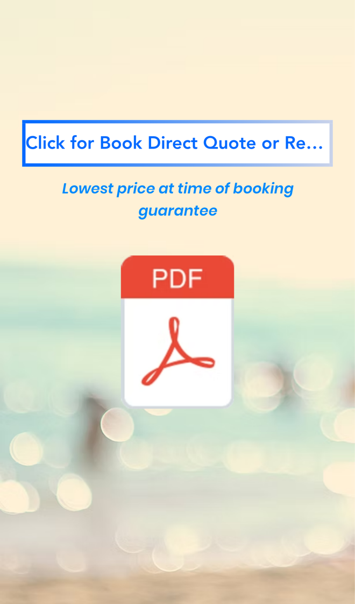
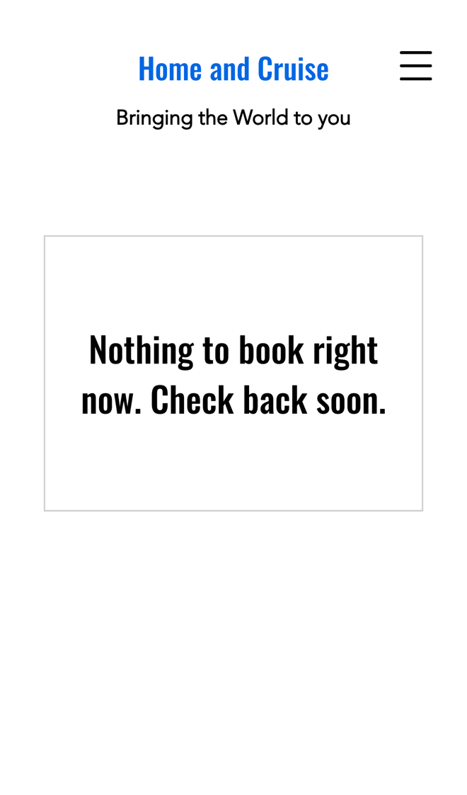

Home and Cruise: holiday cottage bookings, faster
I went through your websites on a phone, the way a family planning a break near Beaumaris would, and read your property pages, availability list, booking form and cruise pages. You give guests a lot of useful detail, and booking direct with you saves them agency fees. Where I think you'd win more bookings, and save time, is the step between finding a date and paying the deposit.
What's already working
Three things I'd change
Show free dates and prices instantly
Your availability and rates are in a 15-page PDF that shows the date and time of its last update. To book, guests fill in "Get a Book Direct Quote or reserve a break" with their "Dates sought and any questions" and wait to hear back.

A family comparing cottages on a phone wants to know there and then if their week is free and what it costs. Every PDF update and every quote reply is time spent on something a calendar can do.
- A calendar for each property shows the free dates, using the nightly rates and minimum stays you set now.
- Guests pick their dates and see the price straight away, with the deposit worked out at £280 a week or £40 a night.
- You update one calendar instead of the PDF, and every enquiry arrives with the dates and price already filled in.
Take the deposit online
Your contact page says "If you would like to make a reservation, just ring us on 01248 811671, we can take the deposit payment by debit card" or by bank transfer or cheque. Your About page says "the balance is payable eight weeks before arrival."
Across five properties, every booking means a call to take the deposit, a confirmation to write, and a balance to remember eight weeks out.
- Guests reserve their dates and pay the deposit by card online, or choose bank transfer if they prefer.
- Their written confirmation and arrival details go out by email straight away.
- A balance reminder with a payment link goes out by itself eight weeks before arrival, and you get a message when it's paid.
Let cruise clients book a time
Your cruise site invites people to "book a free appointment at a time and date of your choice", and you're open "Tuesday and Saturday for appointments 9am-5pm". Your Book Online page says "Nothing to book right now. Check back soon."

Someone ready to plan a cruise is told they can pick a time, then finds nothing to pick. Some will ring, and some may book their cruise somewhere else.
- Your Tuesday and Saturday slots show on the Book Online page, straight from your own calendar.
- They pick a time, say where they'd like to go and roughly when, and get a confirmation.
- A reminder goes out the day before, and you see what they're after before they walk in.
Your website, answering for you
An assistant that answers the questions you get asked again and again, at any hour. These answers come only from your own websites: your property pages, your availability list and your booking terms.
Anything it can't answer, it passes to you with the customer's details.
What happens next
For five local businesses I'm setting up one of these for free, in return for an honest review. Pick whichever would help most.
I'm Tom Williams and I run Tomoni-AI. If a 20-minute chat would help, reply to my email or give me a ring.
Call 07971 512158Email Tom